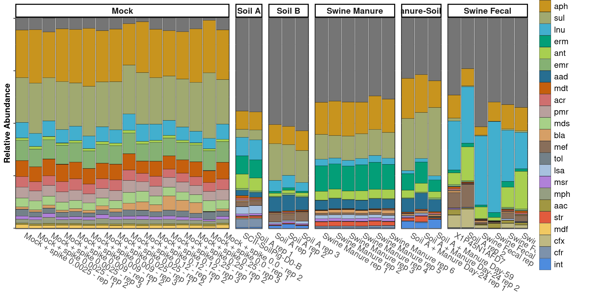
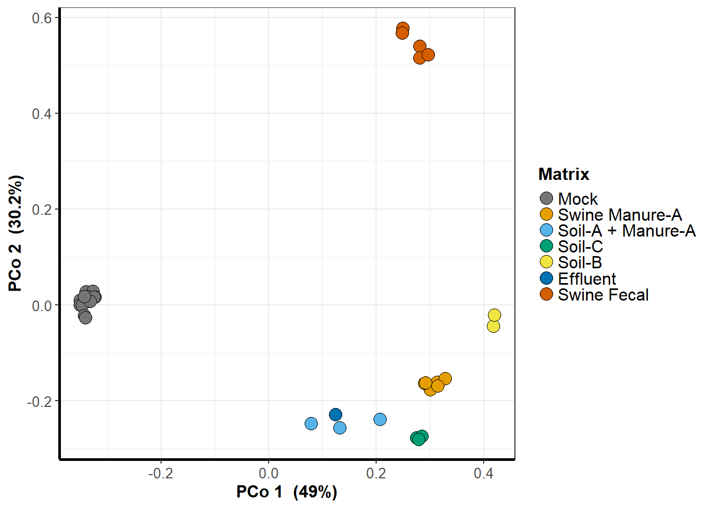
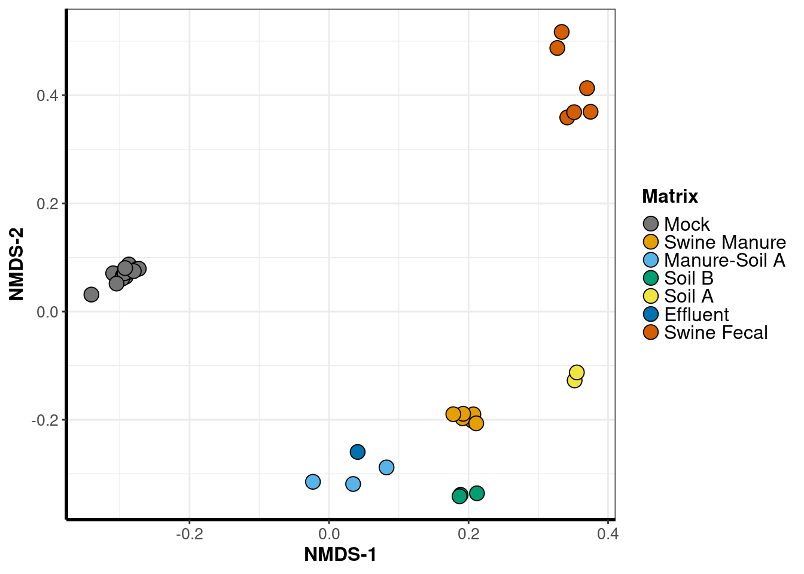
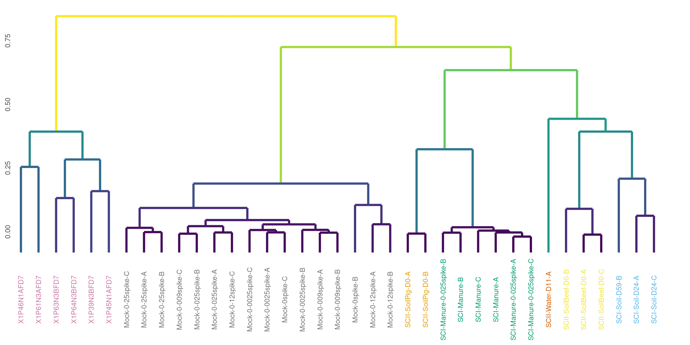
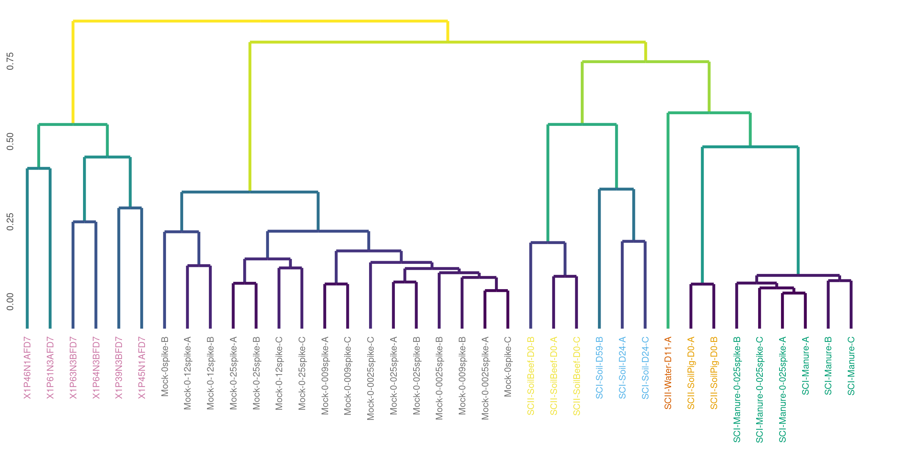
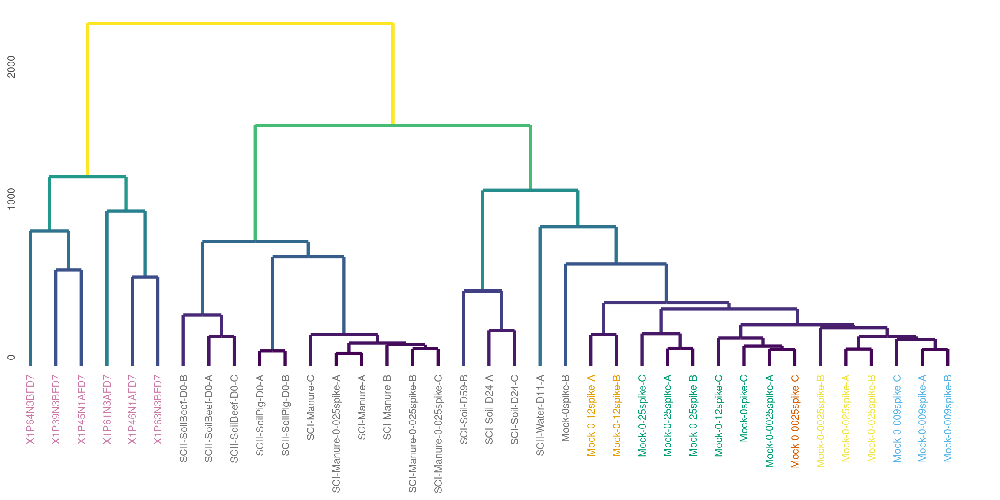
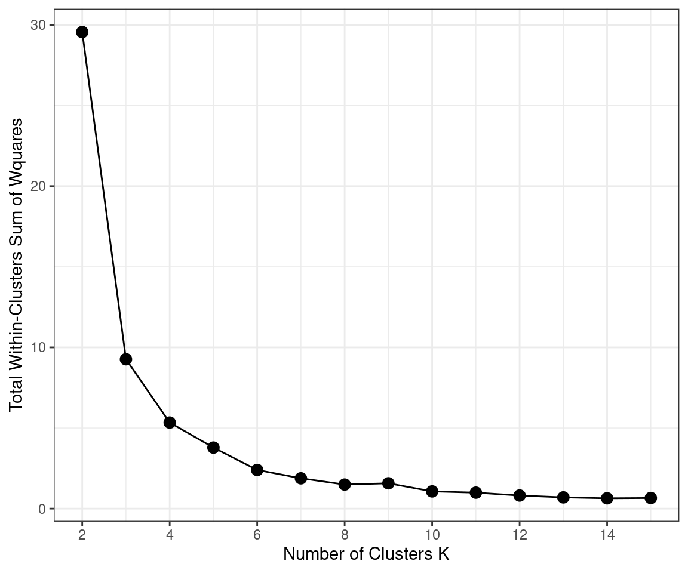
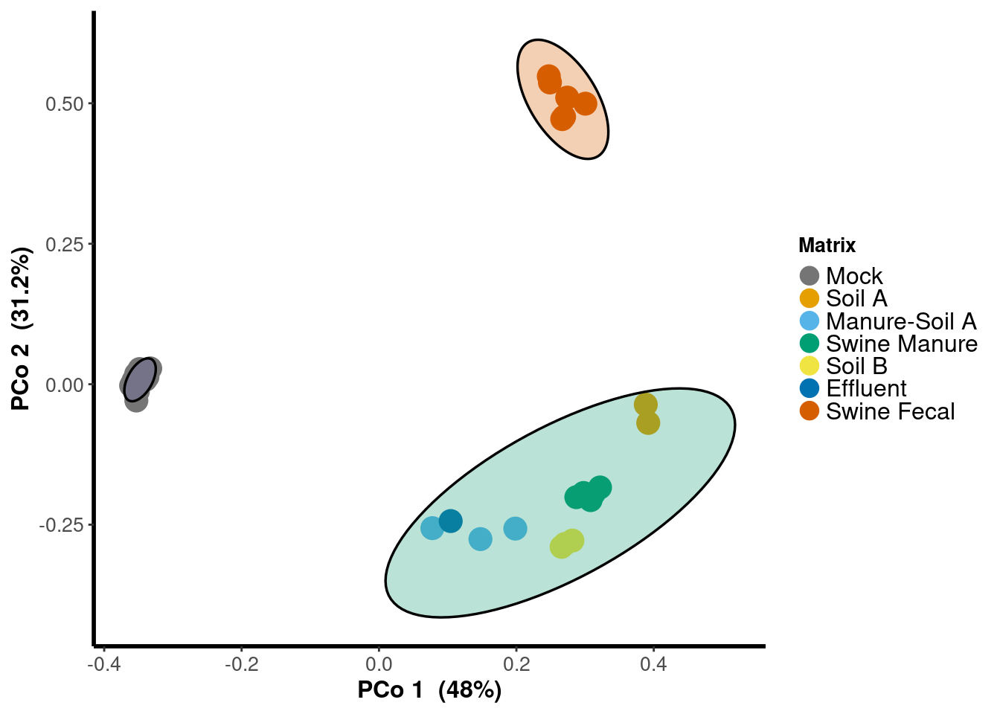
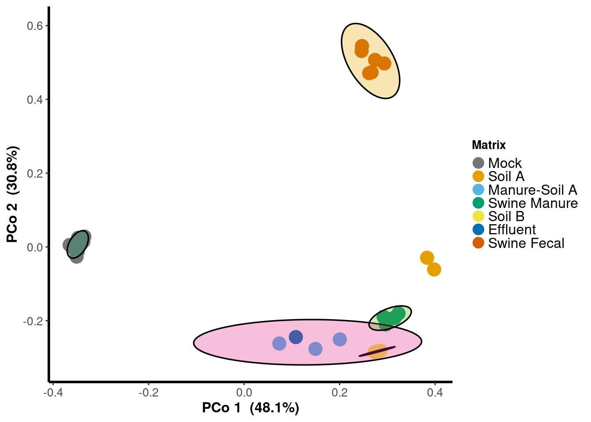

ARG Profile
classification <- 'ARG_Family'
treatment_name <- 'Matrix'
SC_I <- phylosmith::melt_phyloseq(soil_column_I_ARGS)
SC_I <- SC_I[Sample %in% SC_I[,sum(Abundance), by = c('Sample')]$Sample[SC_I[,sum(Abundance), by = c('Sample')]$V1 > 1000]]
# SC_I <- SC_I[Matrix %in% c('Manure', 'Soil') & Treatment == 'Control']
SC_I <- SC_I[, sum(Abundance), by = c('Sample', 'Gene', 'Treatment', 'Matrix', 'Day')]
set(SC_I, j = 'Gene', value = tolower((SC_I[['Gene']])))
SC_I[, ARG_Family := tolower(substr(SC_I[['Gene']],1,3))]
set(SC_I, j = 'Matrix', value = tolower(SC_I[['Matrix']]))
set(SC_I, which(SC_I[['Matrix']]=='soil' & SC_I[['Day']]==0), j='Matrix', value='Soil A')
set(SC_I, which(SC_I[['Matrix']]=='soil' & SC_I[['Day']]!=0), j='Matrix', value='Manure-Soil A')
SC_I$Sample <- factor(SC_I$Sample, levels = unique(SC_I$Sample[order(as.numeric(SC_I$Day))]))
setnames(SC_I, 'Gene', 'ARG')
graph_data <- melt(read_counts, id.vars = c('ARG_Family', 'ARG', 'Primer'), variable.name = 'Sample_Name')
graph_data <- graph_data[ARG != 'spike']
graph_data <- graph_data[!(ARG %in% c('16S'))]
graph_data <- merge(metadata[,c(1:3)], graph_data, by.x = 'Sample Name', by.y = 'Sample_Name')
graph_data <- graph_data[, sum(value), by = c('Sample Name', 'Matrix', 'ARG_Family', 'Day', 'ARG')]
set(graph_data, j = classification, value = factor(graph_data[[classification]], levels = c('spike', rev(unique(graph_data[[classification]][!(graph_data[[classification]]=='spike')])))))
setkey(graph_data, "ARG", "Sample Name")
set(graph_data, which(is.na(graph_data[['Day']])), j='Day', value=0)
setnames(graph_data, c('Sample Name', 'Day', 'Matrix'), c('Sample', 'Day', 'Matrix'))
graph_data <- rbindlist(list(
cbind(graph_data[,c('Sample', 'ARG_Family', 'Matrix', 'Day', 'V1')], Tech = 'DARTE-QM'),
cbind(SC_I[,c('Sample', 'ARG_Family', 'Matrix', 'Day', 'V1')], Tech = 'Metagenome')), fill = TRUE)
graph_data[, relative_abundance := round(V1/sum(V1), 4), by = c('Sample')]
set(graph_data, j = 'Matrix', value = as.character(graph_data$Matrix))
setkey(graph_data, 'Sample', 'Day')
graph_data <- graph_data[!(is.na(relative_abundance))]
graph_data <- graph_data[graph_data$Matrix != 'effluent',]
graph_data <- graph_data[graph_data$Matrix != 'Effluent',]
graph_data <- graph_data[V1 != 0]
graph_data[, relative_abundance := round(V1/sum(V1), 4), by = c('Sample')]
classification_order <- setorder(graph_data[, lapply(.SD, sum, na.rm=TRUE), by=ARG_Family, .SDcols=c("relative_abundance")], -relative_abundance)
classification_order <- classification_order[round(classification_order[[2]]*100 / length(unique(graph_data[Tech == "DARTE-QM"]$Sample)),1) >= 0.5,]
graph_data <- graph_data[ARG_Family %in% classification_order$ARG_Family]
set(graph_data, j = 'ARG_Family', value = factor(graph_data$ARG_Family, levels = classification_order[[1]]))
set(graph_data, which(graph_data$Matrix == "Soil Ammended"), 'Matrix', 'Manure-Soil')
set(graph_data, j = 'Matrix', value = factor(graph_data$Matrix, levels = unique(metadata$Matrix)[c(1,2,5,4,6,3,8,9)]))
graph_colors <- schuylR::create_palette(length(levels(graph_data[[classification]])))
graph_data <- graph_data[, lapply(.SD, sum, na.rm=TRUE), by=c('Sample', "ARG_Family", "Day", 'Matrix', 'Tech'),
.SDcols=c("V1", "relative_abundance") ]
graph_data[, relative_abundance := round(V1/sum(V1), 4), by = c('Sample')]
samples <- c(
"Mock + spike 0.0025 - rep 1","Mock + spike 0.0025 - rep 2","Mock + spike 0.0025 - rep 3",
"Mock + spike 0.009 - rep 1","Mock + spike 0.009 - rep 2","Mock + spike 0.009 - rep 3",
"Mock + spike 0.025 - rep 1","Mock + spike 0.025 - rep 2",
"Mock + spike 0.12 - rep 1","Mock + spike 0.12 - rep 2","Mock + spike 0.12 - rep 3",
"Mock + spike 0.25 - rep 1","Mock + spike 0.25 - rep 2","Mock + spike 0.25 - rep 3",
"Mock + spike 0.0 - rep 1","Mock + spike 0.0 - rep 2",
"Swine Manure rep 1", "Swine Manure rep 2", "Swine Manure rep 3",
"Swine Manure rep 4", "Swine Manure rep 5", "Swine Manure rep 6",
"Soil A + Manure Day-24 rep 1", "Soil A + Manure Day-24 rep 2",
"Soil A + Manure Day-59",
"Soil A rep 1", "Soil A rep 2", "Soil A rep 3",
"Soil A rep 1", "Soil A rep 2",
"Swine Fecal rep 1", "Swine Fecal rep 2", "Swine Fecal rep 3",
"Swine Fecal rep 4", "Swine Fecal rep 5", "Swine Fecal rep 6")
for(i in seq_along(samples)){
set(graph_data, which(graph_data$Sample == as.character(unique(graph_data$Sample)[i])), 'Sample', samples[i])
}
profile <- ggplot(graph_data[Tech == 'DARTE-QM'], aes_string(x="Sample", y="relative_abundance",
fill=classification)) +
guides(fill=guide_legend(ncol=ceiling(length(unique(graph_data[[classification]]))/50))) +
scale_fill_manual(values=graph_colors, aesthetics=c("color",
"fill")) +
geom_bar(stat="identity", position="stack",
size=0.12, width=0.95, color="black") +
ylab("Relative Abundance") +
theme_bw() + theme(axis.text.x = element_text(size=12, angle = 330, hjust = -0.05),
axis.text.y=element_blank(),
axis.title.x=element_blank(),
axis.title.y=element_text(size=12, face="bold"),
axis.ticks.x=element_blank(),
legend.title=element_text(size=12,
face="bold"),
legend.text=element_text(size=12),
legend.spacing.x=unit(0.005, "npc"), legend.key.size=unit(6,"mm"),
panel.background=element_rect(color="black",
size=1.5), panel.spacing=unit(0.01, "npc"),
strip.text.x=element_text(size=12, face="bold"),
strip.background=element_rect(colour="black", size=1.4,
fill="white"), panel.grid.major.x=element_blank()) +
scale_y_continuous(expand=expansion(mult=c(0.0037,
0.003), add=c(0, 0))) +
ggh4x::facet_nested(.~ Matrix, scales = "free", space = "free") +
scale_x_discrete(expand=expansion(mult=0, add=0.51))
Ordination
PCA
treatment = 'Matrix'
x = 1
y = 2
method = 'bray'
circle = 0.95
graph_data <- read_counts[,-c(2,3)]
graph_data <- rarefy(data=graph_data[, c(1, which(colSums(graph_data[,-1])>5000)+1), with=FALSE], min(colSums(graph_data[,-1])))[,-1]
distance_matrix <- vegan::vegdist(t(graph_data), method, na.rm = TRUE)
distance_matrix[is.na(distance_matrix)] <- 0
MDS <- cmdscale(distance_matrix, k = max(c(x,y)), eig = TRUE)
graph_data <- cbind(x = MDS$points[,x], y = MDS$points[,y])
graph_data <- merge(graph_data, metadata[,c('Sample Name', 'Matrix')], by.x = 0, by.y = 'Sample Name')
color_count <- length(unique(graph_data[[treatment]]))
graph_colors <- schuylR::create_palette(color_count)
set(graph_data, j = 'Matrix', value = factor(graph_data$Matrix, levels = unique(graph_data$Matrix)))
pca <- ggplot(data = graph_data, aes_string('x', 'y', group = treatment)) +
geom_point(aes_string(fill = treatment), shape = 21,
color = "black", size = 4, alpha = 1) + scale_fill_manual(values = graph_colors) +
theme_bw() + theme(
axis.line.x = element_line(colour = "black",size = 1, linetype = "solid"),
axis.line.y = element_line(colour = "black",size = 1, linetype = "solid"),
axis.text.x = element_text(size = 10),
axis.text.y = element_text(size = 10),
axis.title.x = element_text(size = 12,face = "bold"),
axis.title.y = element_text(size = 12,face = "bold"),
legend.title = element_text(size = 12,face = "bold"),
legend.text = element_text(size = 12),
legend.spacing.x = unit(0.005, "npc"),
legend.key.size = unit(4,"mm")) +
labs(x = paste("PCo ", x, " (", round(sum(MDS$eig[x])/sum(MDS$eig[MDS$eig > 0]),3)*100, "%)", sep = ''),
y = paste("PCo ", y, " (", round(sum(MDS$eig[y])/sum(MDS$eig[MDS$eig > 0]),3)*100, "%)", sep = '')) +
guides(fill = guide_legend(override.aes = list(size = 4))) +
guides(fill = guide_legend(ncol = 1),
group = guide_legend(ncol = 1))
NMDS
graph_data <- read_counts[,-c(2,3)]
graph_data <- rarefy(data=graph_data[, c(1, which(colSums(graph_data[,-1])>5000)+1), with=FALSE], min(colSums(graph_data[,-1])))[,-1]
distance_matrix <- vegan::vegdist(t(graph_data), method, na.rm = TRUE)
distance_matrix[is.na(distance_matrix)] <- 0
MDS <- metaMDS(t(distance_matrix), autotransform = FALSE, distance = method,
k = 3, trymax = 100, trace = FALSE)
graph_data <- merge(scores(MDS)[,c(1,2)],
metadata[,c('Sample Name', 'Matrix')], by.x = 0, by.y = 'Sample Name')
color_count <- length(unique(graph_data[[treatment]]))
graph_colors <- schuylR::create_palette(color_count)
set(graph_data, j = 'Matrix', value = factor(graph_data$Matrix, levels = unique(graph_data$Matrix)))
nmds <- ggplot(data = graph_data, aes_string('NMDS1', 'NMDS2', group = treatment)) +
geom_point(aes_string(fill = treatment), shape = 21,
color = "black", size = 4, alpha = 1) + scale_fill_manual(values = graph_colors) +
theme_bw() + theme(
axis.line.x = element_line(colour = "black",size = 1, linetype = "solid"),
axis.line.y = element_line(colour = "black",size = 1, linetype = "solid"),
axis.text.x = element_text(size = 10),
axis.text.y = element_text(size = 10),
axis.title.x = element_text(size = 12,face = "bold"),
axis.title.y = element_text(size = 12,face = "bold"),
legend.title = element_text(size = 12,face = "bold"),
legend.text = element_text(size = 12),
legend.spacing.x = unit(0.005, "npc"),
legend.key.size = unit(4,"mm")) +
labs(x = paste("NMDS-1"),
y = paste("NMDS-2")) +
guides(fill = guide_legend(override.aes = list(size = 4))) +
guides(fill = guide_legend(ncol = 1),
group = guide_legend(ncol = 1))
PERMANOVA
graph_data <- read_counts[,-c(2,3)]
graph_data <- rarefy(data=graph_data[, c(1, which(colSums(graph_data[,-1])>5000)+1), with=FALSE], min(colSums(graph_data[,-1])))[,-1]
graph_data <- graph_data[rowSums(graph_data) >=5, ]
permanova <- vegan::adonis(t(graph_data) ~ Matrix, data = metadata[`Sample Name` %in% colnames(graph_data)])##
## Call:
## vegan::adonis(formula = t(graph_data) ~ Matrix, data = metadata[`Sample Name` %in% colnames(graph_data)])
##
## Permutation: free
## Number of permutations: 999
##
## Terms added sequentially (first to last)
##
## Df SumsOfSqs MeanSqs F.Model R2 Pr(>F)
## Matrix 6 5.0507 0.84178 11.146 0.69033 0.001 ***
## Residuals 30 2.2657 0.07552 0.30967
## Total 36 7.3164 1.00000
## ---
## Signif. codes: 0 '***' 0.001 '**' 0.01 '*' 0.05 '.' 0.1 ' ' 1
Hierarchical Clustering
Bray-Curtis
method = 'bray'
graph_data <- read_counts[,-c(2:3)]
graph_data <- rarefy(data=graph_data[, c(1, which(colSums(graph_data[,-1])>5000)+1), with=FALSE], min(colSums(graph_data[,-1])))[,-1]
distance_matrix <- vegan::vegdist(t(graph_data), method, na.rm = TRUE)
distance_matrix[is.na(distance_matrix)] <- 0
dend <- as.dendrogram(hclust(as.dist(distance_matrix), method = 'complete'))
graph_data <- ggdendro::dendro_data(dend)
sample_colors <- schuylR::create_palette(length(unique(metadata$Matrix)))[as.factor(metadata$Matrix[match(as.character(graph_data$labels$label), metadata$`Sample Name`)])]
sample_dendrogram <- ggplot(data = ggdendro::segment(graph_data)) + geom_blank() + theme_minimal()
sample_dendrogram <- sample_dendrogram + geom_segment(aes_string(x = "x",
y = "y",
xend = "xend",
yend = "yend",
color = 'y'),
show.legend = FALSE,
size = 1.3) +
scale_x_continuous(breaks = seq_along(graph_data$labels$label),
labels = gsub('Q3_','',graph_data$labels$label)) +
scale_y_continuous() +
theme(axis.text.x = element_text(angle = 90, vjust = 0.5,
margin = margin(t = -10),
color = sample_colors),
axis.text.y = element_text(angle = 90, hjust = -1,
margin = margin(r = -30),),
axis.title.x = element_blank(),
axis.title.y = element_blank(),
panel.grid.major = element_blank(),
panel.grid.minor = element_blank(),
plot.margin=unit(c(5.5, 5.5, 5.5, 5.5),"points")) + #t,r,b,l
guides(color = guide_legend(override.aes = list(alpha=1))) +
scale_color_gradientn(colors = viridis::viridis(10))
Jaccard
method = 'jaccard'
graph_data <- read_counts[,-c(2:3)]
graph_data <- rarefy(data=graph_data[, c(1, which(colSums(graph_data[,-1])>5000)+1), with=FALSE], min(colSums(graph_data[,-1])))[,-1]
distance_matrix <- vegan::vegdist(t(graph_data), method, na.rm = TRUE)
distance_matrix[is.na(distance_matrix)] <- 0
dend <- as.dendrogram(hclust(as.dist(distance_matrix), method = 'complete'))
data <- ggdendro::dendro_data(dend)
sample_dendrogram <- ggplot(data = ggdendro::segment(data)) + geom_blank() + theme_minimal()
sample_dendrogram <- sample_dendrogram + geom_segment(aes_string(x = "x",
y = "y",
xend = "xend",
yend = "yend",
color = 'y'),
show.legend = FALSE,
size = 1.3) +
scale_x_continuous(breaks = seq_along(data$labels$label),
labels = gsub('Q3_','',data$labels$label)) +
scale_y_continuous() +
theme(axis.text.x = element_text(angle = 90, hjust = 1, vjust = 0.5,
margin = margin(t = -10),
color = sample_colors),
axis.text.y = element_text(angle = 90, hjust = -1,
margin = margin(r = -30),),
axis.title.x = element_blank(),
axis.title.y = element_blank(),
panel.grid.major = element_blank(),
panel.grid.minor = element_blank(),
plot.margin=unit(c(5.5, 5.5, 5.5, 5.5),"points")) + #t,r,b,l
guides(color = guide_legend(override.aes = list(alpha=1))) +
scale_color_gradientn(colors = viridis::viridis(10))
Euclidean
method = 'euclidean'
graph_data <- read_counts[,-c(2:3)]
graph_data <- rarefy(data=graph_data[, c(1, which(colSums(graph_data[,-1])>5000)+1), with=FALSE], min(colSums(graph_data[,-1])))[,-1]
distance_matrix <- vegan::vegdist(t(graph_data), method, na.rm = TRUE)
distance_matrix[is.na(distance_matrix)] <- 0
dend <- as.dendrogram(hclust(as.dist(distance_matrix), method = 'complete'))
data <- ggdendro::dendro_data(dend)
sample_dendrogram <- ggplot(data = ggdendro::segment(data)) + geom_blank() + theme_minimal()
sample_dendrogram <- sample_dendrogram + geom_segment(aes_string(x = "x",
y = "y",
xend = "xend",
yend = "yend",
color = 'y'),
show.legend = FALSE,
size = 1.3) +
scale_x_continuous(breaks = seq_along(data$labels$label),
labels = gsub('Q3_','',data$labels$label)) +
scale_y_continuous() +
theme(axis.text.x = element_text(angle = 90, hjust = 1, vjust = 0.5,
margin = margin(t = -10),
color = sample_colors),
axis.text.y = element_text(angle = 90, hjust = -1,
margin = margin(r = -30),),
axis.title.x = element_blank(),
axis.title.y = element_blank(),
panel.grid.major = element_blank(),
panel.grid.minor = element_blank(),
plot.margin=unit(c(5.5, 5.5, 5.5, 5.5),"points")) + #t,r,b,l
guides(color = guide_legend(override.aes = list(alpha=1))) +
scale_color_gradientn(colors = viridis::viridis(10))
Gower
method = 'gower'
graph_data <- read_counts[,-c(2:3)]
graph_data <- rarefy(data=graph_data[, c(1, which(colSums(graph_data[,-1])>5000)+1), with=FALSE], min(colSums(graph_data[,-1])))[,-1]
distance_matrix <- vegan::vegdist(t(graph_data), method, na.rm = TRUE)
distance_matrix[is.na(distance_matrix)] <- 0
dend <- as.dendrogram(hclust(as.dist(distance_matrix), method = 'complete'))
data <- ggdendro::dendro_data(dend)
sample_dendrogram <- ggplot(data = ggdendro::segment(data)) + geom_blank() + theme_minimal()
sample_dendrogram <- sample_dendrogram + geom_segment(aes_string(x = "x",
y = "y",
xend = "xend",
yend = "yend",
color = 'y'),
show.legend = FALSE,
size = 1.3) +
scale_x_continuous(breaks = seq_along(data$labels$label),
labels = gsub('Q3_','',data$labels$label)) +
scale_y_continuous() +
theme(axis.text.x = element_text(angle = 90, hjust = 1, vjust = 0.5,
margin = margin(t = -10),
color = sample_colors),
axis.text.y = element_text(angle = 90, hjust = -1,
margin = margin(r = -30),),
axis.title.x = element_blank(),
axis.title.y = element_blank(),
panel.grid.major = element_blank(),
panel.grid.minor = element_blank(),
plot.margin=unit(c(5.5, 5.5, 5.5, 5.5),"points")) + #t,r,b,l
guides(color = guide_legend(override.aes = list(alpha=1))) +
scale_color_gradientn(colors = viridis::viridis(10))
K-Means Clustering
Optimize K
method = 'bray'
x = 1
y = 2
graph_data <- read_counts[,-c(2:3)]
graph_data <- rarefy(data=graph_data[, c(1, which(colSums(graph_data[,-1])>5000)+1), with=FALSE], min(colSums(graph_data[,-1])))[,-1]
distance_matrix <- vegan::vegdist(t(graph_data), method, na.rm = TRUE)
distance_matrix[is.na(distance_matrix)] <- 0
n_k = 15
graph_data <- sapply(2:n_k, function(k){
kmeans(distance_matrix, k, nstart=20 ,iter.max = 15 )$tot.withinss
})
graph_colors <- rep('ins', n_k-1)
graph_size <- rep(2, n_k-1)
for(i in seq(3)){
k_value <- data.frame(k = 2:n_k, ss = graph_data, diff = c(abs(diff(graph_data)),0))
k_value <- cbind(k_value, "percent_change" = c(0, round((k_value$diff/k_value$ss)*100)[-length(k_value$diff)]))
if(i!=1)k_value <- k_value[(max(which(graph_colors != 'ins'))+1):nrow(k_value),]
opt_k <- max(k_value[k_value$percent_change >= mean(k_value$percent_change) + sd(k_value$percent_change), 'k']) - 1
graph_colors[opt_k] <- 'sig'
graph_size[opt_k] <- 4
}
opt_k_means <- ggplot(data.frame(k = 2:n_k, graph_data), aes(k, graph_data)) +
geom_line() +
geom_point(size = 3, color = "black") + theme_bw() +
scale_x_continuous(breaks = c(seq(2,14, by = 2))) +
theme(
legend.position = c(0.9, 0.82),
legend.justification = c("right", "top"),
legend.text = element_text(size = 12)
) +
guides(color = guide_legend(override.aes = list(size = 4))) +
labs(x = "Number of Clusters K", y = "Total Within-Clusters Sum of Wquares", color = "")
K(3)
k = 3
treatment = 'Matrix'
MDS <- cmdscale(distance_matrix, k = max(c(x,y)), eig = TRUE)
graph_data <- cbind(x = MDS$points[,x], y = MDS$points[,y])
graph_data <- merge(graph_data, metadata, by.x = 0, by.y = 'Sample Name')
km <- kmeans(distance_matrix, centers = k, iter.max = 10, nstart = 20)$cluster
graph_data <- cbind(graph_data, cluster = factor(km[match(names(km), graph_data$Row.names)]))
graph_colors <- schuylR::create_palette(length(unique(graph_data[[treatment]])))
cluster_colors <- schuylR::create_palette(k, colors = 'Dark2')
k3 <- ggplot(data = graph_data, aes_string('x', 'y', group = 'cluster'))
k3 <- k3 +
geom_point(aes_string(color = 'Matrix', fill = 'Matrix'),
size = 5, alpha = 1) +
scale_color_manual(values = graph_colors) +
scale_fill_manual(values = graph_colors) +
theme_classic() + theme(axis.line.x = element_line(colour = "black", size = 1, linetype = "solid"), axis.line.y = element_line(colour = "black",
size = 1, linetype = "solid"), axis.text.x = element_text(size = 10),
axis.text.y = element_text(size = 10), axis.title.x = element_text(size = 12,
face = "bold"), axis.title.y = element_text(size = 12,
face = "bold"), legend.title = element_text(size = 10,
face = "bold"), legend.text = element_text(size = 12),
legend.spacing.x = unit(0.005, "npc"), legend.key.size = unit(4,
"mm"), legend.background = element_rect(fill = (alpha = 0))) +
labs(x = paste("PCo ", x, " (", round(sum(MDS$eig[x])/sum(MDS$eig[MDS$eig > 0]),3)*100, "%)", sep = ''),
y = paste("PCo ", y, " (", round(sum(MDS$eig[y])/sum(MDS$eig[MDS$eig > 0]),3)*100, "%)", sep = '')) +
guides(fill = guide_legend(override.aes = list(size = 4))) +
geom_polygon(data = phylosmith:::CI_ellipse(ggplot_build(k3)$data[[1]], 'group'),
aes(x = x, y = y, group = group), color = "black",
alpha = 0.3, size = 0.6, linetype = 1,
fill = cluster_colors[phylosmith:::CI_ellipse(ggplot_build(k3)$data[[1]], 'group', level = 0.01)$group])
K(6)
k = 6
cluster_colors <- schuylR::create_palette(k, colors = 'Dark2')
km <- kmeans(distance_matrix, centers = k, iter.max = 10, nstart = 20)$cluster
graph_data$cluster <- factor(km[match(names(km), graph_data$Row.names)])
k6 <- ggplot(data = graph_data, aes_string('x', 'y', group = 'cluster'))
k6 <- k6 +
geom_point(aes_string(color = 'Matrix', fill = 'Matrix'),
size = 5, alpha = 1) +
scale_color_manual(values = graph_colors) +
scale_fill_manual(values = graph_colors) +
theme_classic() + theme(axis.line.x = element_line(colour = "black", size = 1, linetype = "solid"), axis.line.y = element_line(colour = "black",
size = 1, linetype = "solid"), axis.text.x = element_text(size = 10),
axis.text.y = element_text(size = 10), axis.title.x = element_text(size = 12,
face = "bold"), axis.title.y = element_text(size = 12,
face = "bold"), legend.title = element_text(size = 10,
face = "bold"), legend.text = element_text(size = 12),
legend.spacing.x = unit(0.005, "npc"), legend.key.size = unit(4,
"mm"), legend.background = element_rect(fill = (alpha = 0))) +
labs(x = paste("PCo ", x, " (", round(sum(MDS$eig[x])/sum(MDS$eig[MDS$eig > 0]),3)*100, "%)", sep = ''),
y = paste("PCo ", y, " (", round(sum(MDS$eig[y])/sum(MDS$eig[MDS$eig > 0]),3)*100, "%)", sep = '')) +
guides(fill = guide_legend(override.aes = list(size = 4))) +
geom_polygon(data = phylosmith:::CI_ellipse(ggplot_build(k6)$data[[1]], 'group'),
aes(x = x, y = y, group = group), color = "black",
alpha = 0.3, size = 0.6, linetype = 1,
fill = cluster_colors[phylosmith:::CI_ellipse(ggplot_build(k6)$data[[1]], 'group')$group])
Schuyler Smith
Ph.D. Student - Bioinformatics and Computational Biology
Iowa State University. Ames, IA.